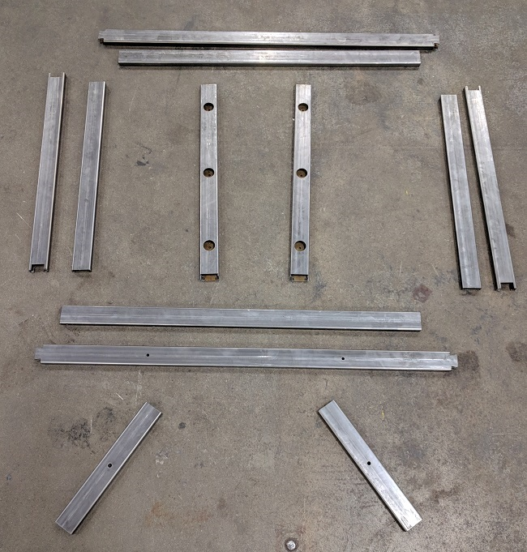
All 12 parts cut. They look shiny here, but still need some cleaning.
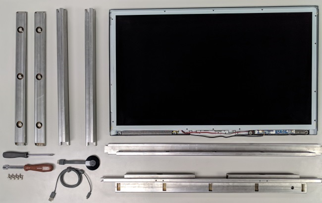
The TV is ready for assembly. The front wall frame pieces are already screwed to their base parts.
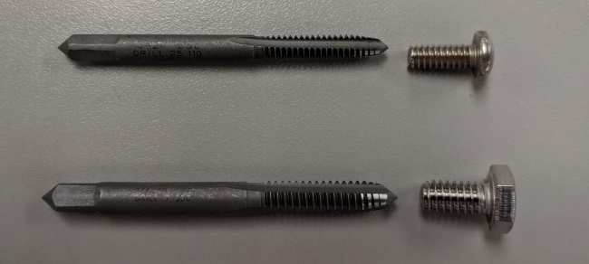
TOP: 10-24 tap. BOTTOM: 1/4-20 tap. Tapped all holes by hand. Worthwhile, but tiring and tedious.
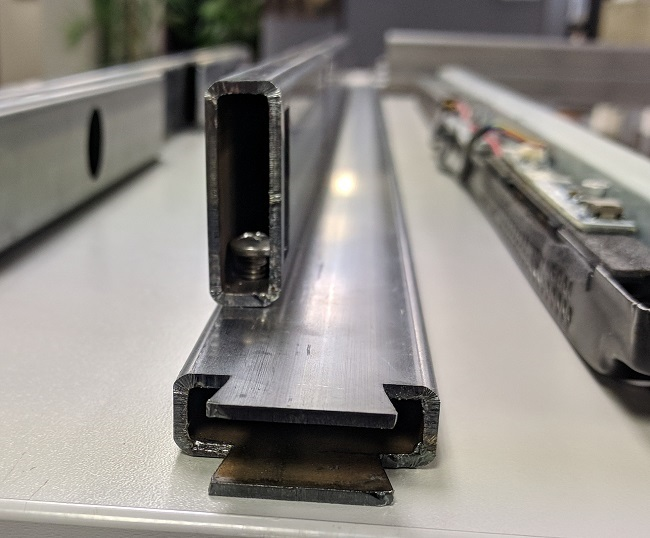
Turns out the screw heads are just too big to fit inside the tube. They still hold fine, though.
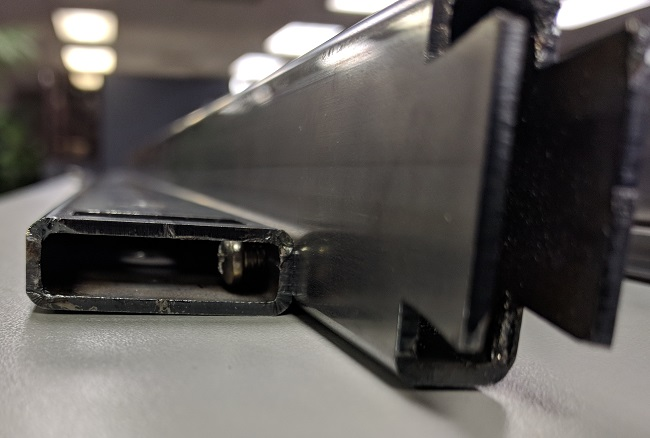
Another view of the frame. This horizontal and vertical pairing is common for all 4 sides.
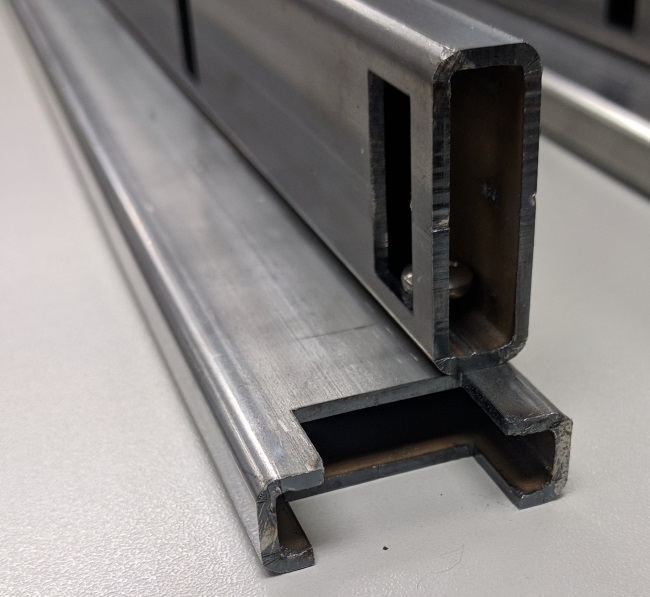
The other side of the 'dovetail' type joint.
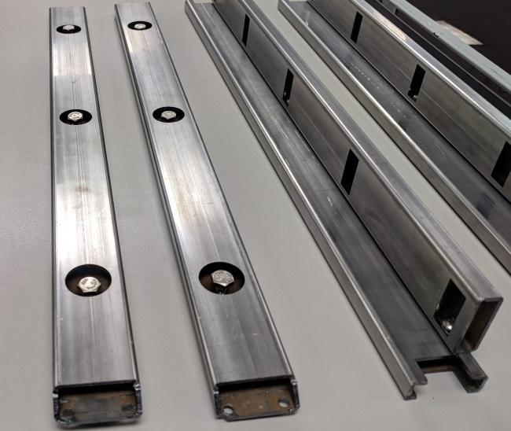
On the left are the two lock bars. Tightening the bolts (slightly) pushes on the back of the TV just enough to hold it in place.
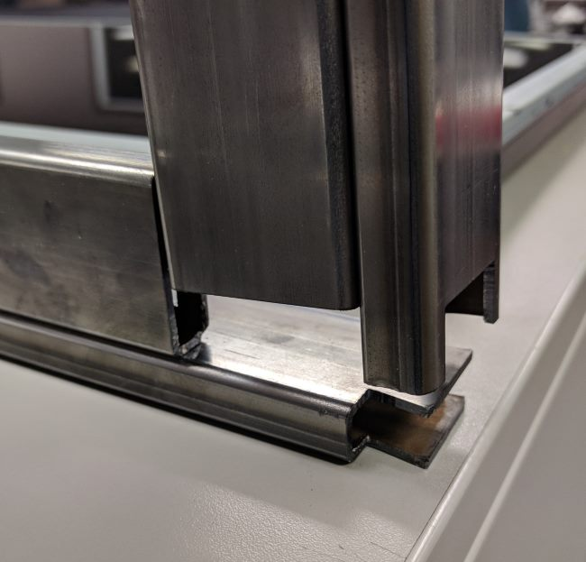
The corner joint looks like it'll fit nicely.
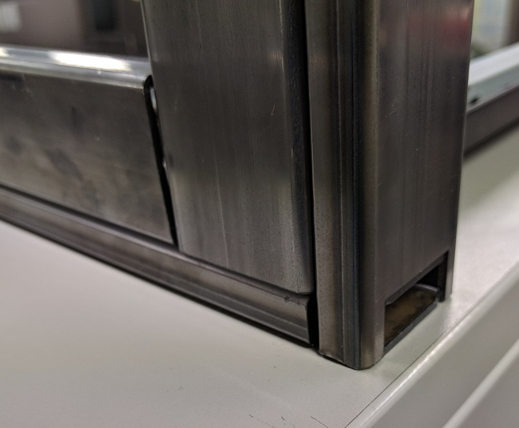
Yes it does! It's not clear in this image, but the joint is slightly angled so that you cannot pull it apart sideways.
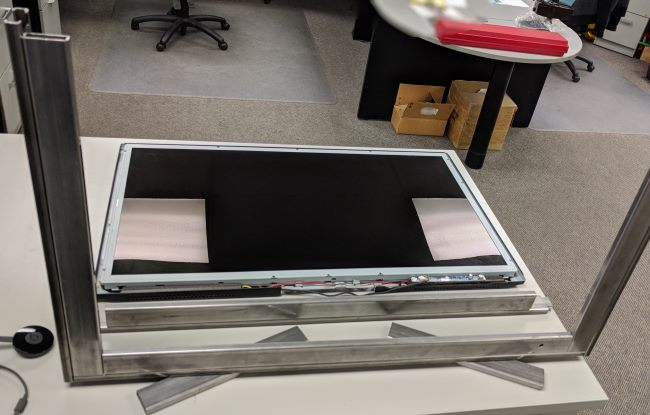
3/4 of the frame is all ready to go.
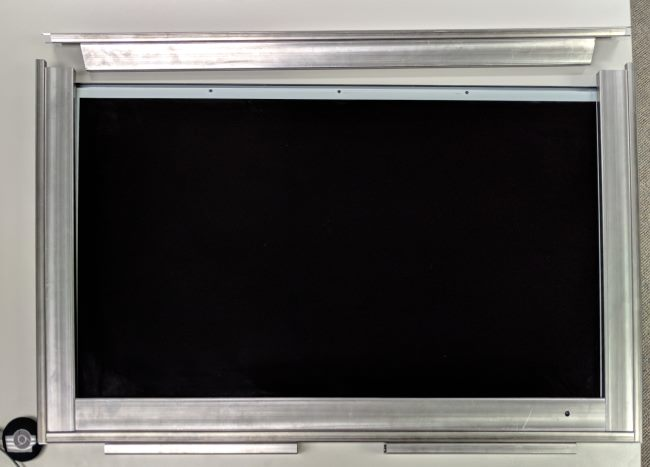
About to close the top off.
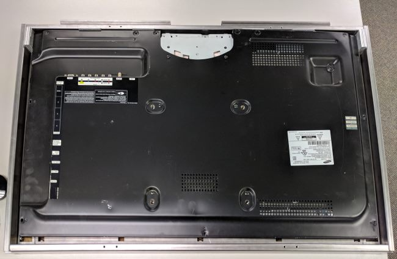
The back is not yet secure. Lock bars still need to be installed.
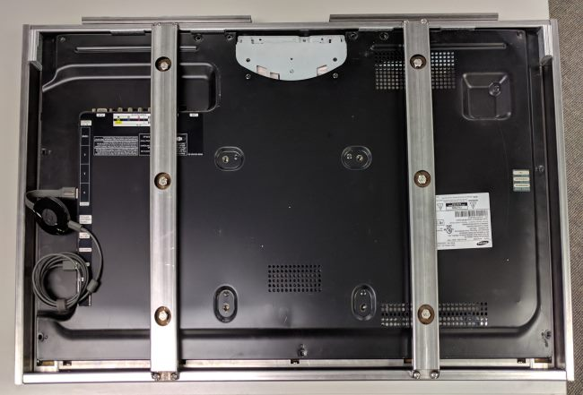
Lock bars in place and screwed to the frame at the top and bottom.
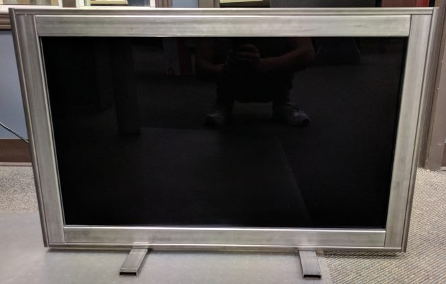
It looks like a solid frame, but does the TV work?
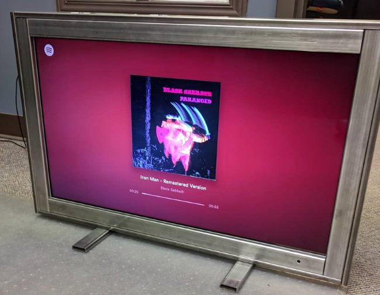
It certainly does! **Sigh of relief**